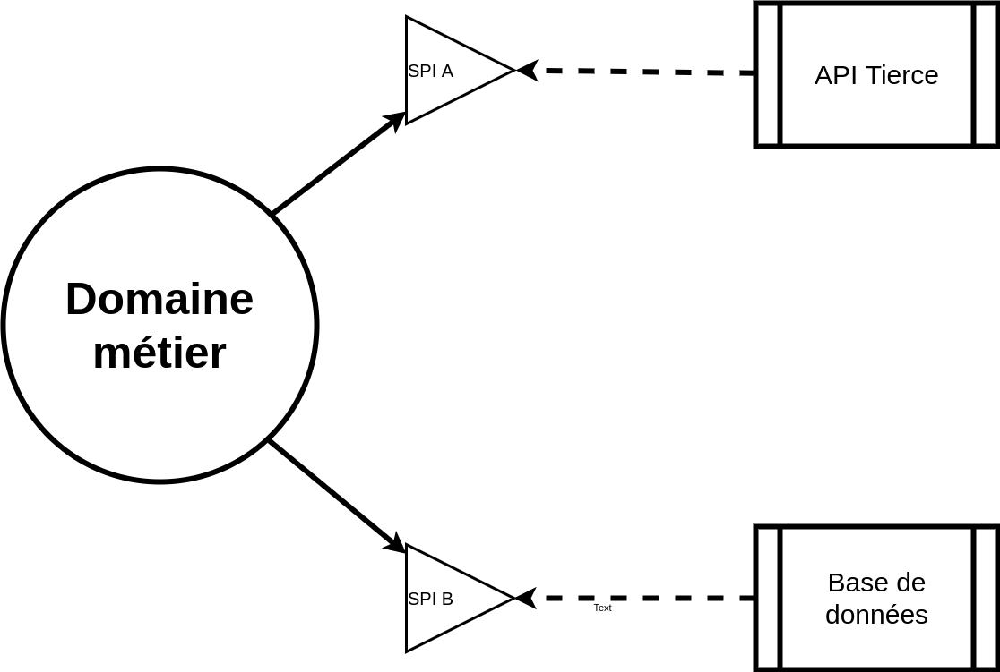
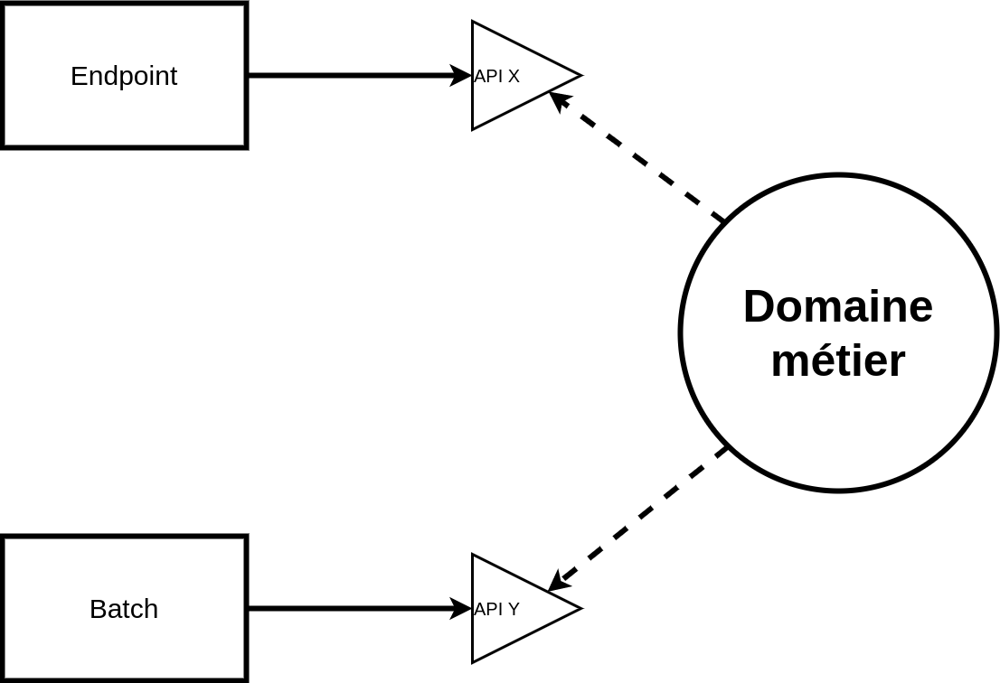
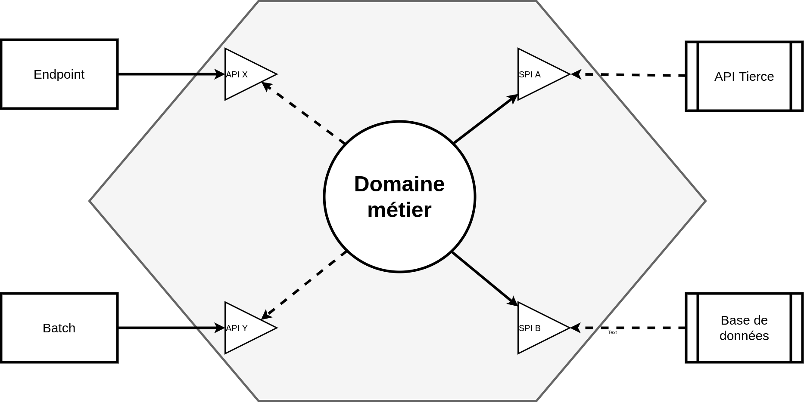
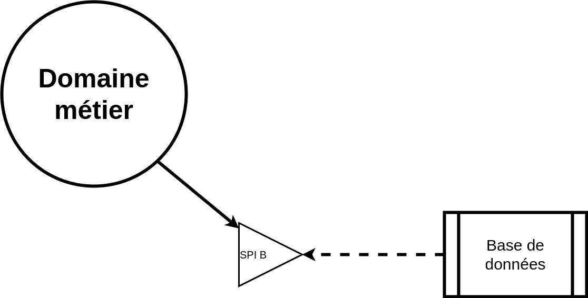
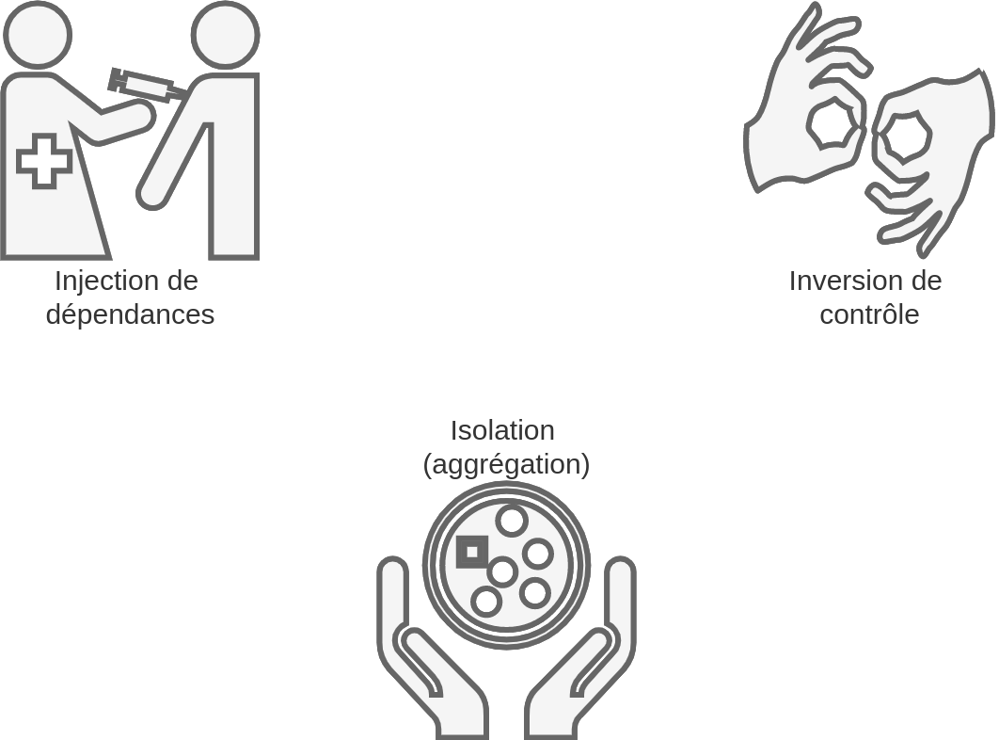
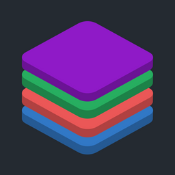
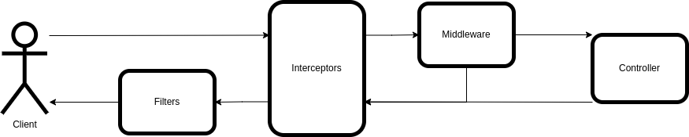
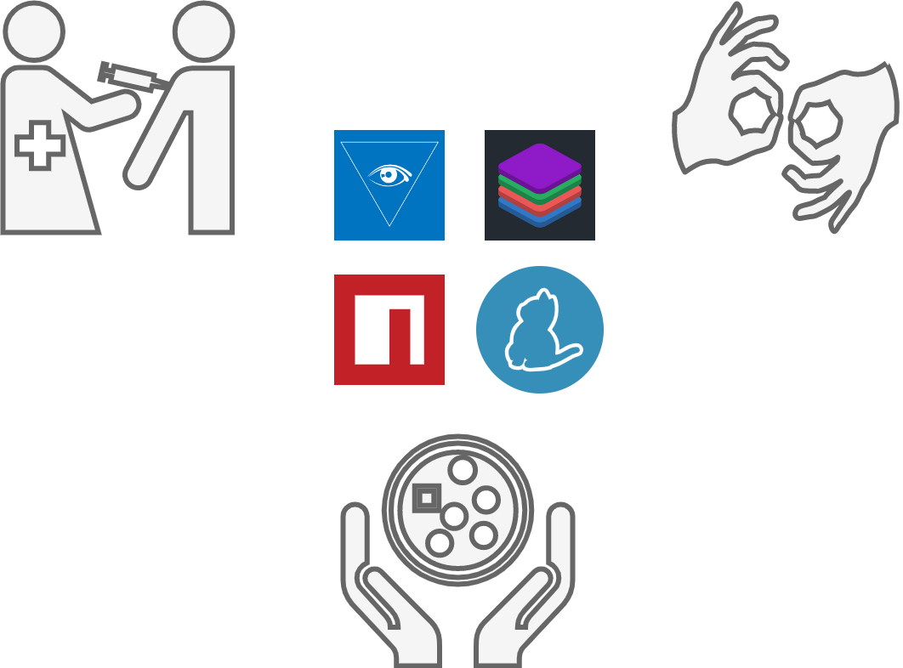

//Endpoint
interface RestUser {
name: string
lastname: string
}
//Domain
interface User {
name: string
lastname: string
birthDate: Date
}
//Databases
interface DataUser {
version: number
name: string
lastname: string
birthDate: Date
}Drogué à l’hexagone, Node JS ne m’a pas vraiment aidé à rester clean …
Mais NestJS pourrait-il me sauver ?
Nicolas Giraud (@nicgiro)
Volcamp 2022

Nicolas Giraud (@nicgiro)
Un client dans le navigateur !

Un client dans le navigateur !

Ajout d’un backend

Ajout d’un backend

Mais ca ne fait que commencer !
Mais de quoi parle-t-on exactement ?






Et c’est parti.

Disclaimer
Dans les entrailles de Typescript

Définir son modèle
class UserEndpoint {
service = new UserService()
get(user: login): RestUser {
return this.service.readUser(login)
}
post(user: RestUser): RestUser {
return this.service.writeUser(user)
}
}
class UserService {
repository = new UserRepository()
readUser(login: string): User {
return this.repository.read(login)
}
writeUser(user: User): User {
return this.repository.write(user)
}
}
class UserRepository {
database = new UserRepository()
read(login: string): User {
return {} as DataUser
}
write(user: User): User {
return {} as DataUser
}
}class UserEndpoint {
service = new UserService()
get(user: string): RestUser {
return this.service.readUser(user)
}
post(user: RestUser): RestUser {
return this.service.writeUser(user as User)
}
}
class UserService {
repository = new UserRepository()
readUser(login: string): User {
return this.repository.read(login)
}
writeUser(user: User): User {
return this.repository.write(user)
}
}
class UserRepository {
database = new UserRepository()
read(login: string): User {
return {} as DataUser
}
write(user: User): User {
return {} as DataUser
}
}Un petit de tricks…
export class TrophyPlayerMapper {
convertTo(trophyPlayerData: TrophyPlayerData) {
if (!!trophyPlayerData) {
return TrophyPlayer.getBuilder().
.with('id', trophyPlayerData.id)
.with('type', trophyPlayerData.type)
.with('code', trophyPlayerData.code)
.build()
} else {
return trophyPlayerData
}
}
}… qui pique !
export class ObjectBuilder<Target, Supplied> {
constructor(private target: Partial<Target>) {}
with<T extends Omit<Target, keyof Supplied>, K extends keyof T>(key: K, value: T[K]) {
const target: Partial<Target> = { ...this.target, [key]: value }
return new ObjectBuilder<Target, Supplied & Pick<T, K>>(target)
}
build() {
return this.target as Target
}
}Vous avez dit bizarre ?
Types : any, unknown, void
Valeurs : null, undefined
Un des effets de la transpilation
export interface MessagesService {
success: (message: MessageKey, broadcast: boolean, params?: any) => void
error: (message: MessageKey, broadcast: boolean, params?: any) => void
info: (message: MessageKey, broadcast: boolean, params?: any) => void
}
export class MessagesServiceImpl implements MessagesService {
success(message: MessageKey, broadcast: boolean = true, params?: any) {
//...
}
error(message: MessageKey, broadcast: boolean = true, params?: any) {
//...
}
info(message: MessageKey, broadcast: boolean = true, params?: any) {
//...
}
}Alors NodeJS ?

Injection de dépendance
TypeDI

Mise en place
@Service()
class UsersService {
getUserByEmailWithPassword(email: string) {
return ...
}
}
@Service()
class UsersController {
constructor(
public usersService: UsersService
) {}
listUsers() {
return this.usersService.getUserByEmailWithPassword('mail');
}
}Configuration
main.ts
import 'reflect-metadata';tsconfig.json
{
//...
"compilerOptions": {
//...
"emitDecoratorMetadata": true,
"experimentalDecorators": true
//...
}
//...
}Inversion de contrôle
Objectif
interface UsersInterface {
getUserByEmail: (email: string) => Promise<User>;
}
@Service()
class UsersService implements UsersInterface {
getUserByEmail(email: string) {
return ...
}
}
@Service()
class UsersController {
constructor(
public usersInterface: UsersInterface
) {}
getMe(email: string) {
return this.usersInterface.getUserByEmail(email);
}
}Inversify
Interface
interface UsersService {
getUserByEmail: (email: string) => Promise<User>;
}Implémentation
@injectable()
class UsersServiceImpl implements UsersService {
getUserByEmail(email: string) {
return ...
}
}Endpoint
import {interfaces} from "inversify-express-utils";
@injectable()
class UsersController implements interfaces.Controller {
constructor(
@Inject(SERVICES.Users) private readonly userService: UsersService
) {}
@Get()
@HttpCode(200)
getMe(email: string) {
return this.userService.getUserByEmail(email);
}
}Définition des implémentations
const SERVICES = {
Users: Symbol.for("UsersServiceImpl")
}Un contexte pour les gouverner tous…
Et au détour d’un tunnel …
…la lumière !
L’isolation…
Ca marche comment ailleurs ?
NPM et ses packages
Les workspaces
package.json (app)
{
//...
"workspaces":[
"app-models",
"app-business-api",
"app-business",
"app-entrypoint"
]
//...
}package.json (app-business)
{
"name":"app-business",
"version":"1.0.0",
"description":"Domaine métier",
"devDependencies":{
"@types/node":"^17.0.8",
"ts-node":"^10.4.0",
"typescript":"^4.5.4"
},
"dependencies":{
"app-models":"../app-models",
"app-business-api":"../app-business-api",
"app-data-spi":"../app-data-spi",
... (1)
}
}Autres dépendances minimales (pas d’éléments techniques dans le domaine)
package.json (app-data)
{
"name":"app-data",
"version":"1.0.0",
"description":"Implémentation d'accès aux données dans Mongo",
"devDependencies":{
"@types/node":"^17.0.8",
"ts-node":"^10.4.0",
"typescript":"^4.5.4"
},
"dependencies":{
"app-models":"../app-models",
"app-data-spi":"../app-data-spi",
"mongoose": "^6.2.8",
... (1)
}
}Autres dépendances techniques pour votre module de base de données.
package.json (app-server)
{
"name":"app-server",
"version":"1.0.0",
"description":"Server app",
"main":"src/app.ts",
"scripts":{
"start":"tsc src/app.ts --esModuleInterop && node src/app.js"
},
"dependencies":{
"express":"^4.17.2",
"app-models":"../app-models",
"app-business-api":"../app-business-api",
"app-business":"../app-business",
"app-data-spi":"../app-data-spi",
"app-data":"../app-data",
"app-entrypoint":"../app-entrypoint"
}
}On y est…

Une petite injection ?
@Injectable()
export class UsersService {
constructor() {}
...
}
export class UtilisateursController {
constructor(
@Inject private readonly userService: UsersService
) {
}
}Et hop, on inverse !
endpoint.controller.ts
export interface UsersService {
...
}
@Injectable()
export class UsersServiceImpl implements UsersService {
constructor() {}
...
}
export class UtilisateursController {
constructor(
@Inject('Users') private readonly userService: UsersService
) {}
}business.module.ts
@Module({
imports: [DataModule],
providers: [ {provide: 'Users', useClass: UsersServiceImpl} ],
exports: [ 'Users' ]
})
export class BusinessModule {}On ne sait jamais …
export const SERVICES = {
Users: 'users.service',
}export interface UsersService {
...
}
@Injectable()
export class UsersServiceImpl implements UsersService {
constructor() {}
...
}
export class UtilisateursController {
constructor(
@Inject(SERVICES.Users) private readonly userService: UsersService
) {}
}
@Module({
imports: [DataModule],
providers: [ {provide: SERVICES.Users, useClass: UsersServiceImpl} ],
exports: [ SERVICES.Users ]
})
export class BusinessModule {}Un projet multi-package
Passage du mode Standard à Monorepo.
Introduction de librairies
nest-cli.json
{
"collection": "@nestjs/schematics",
"sourceRoot": "src",
"monorepo": true,
"root": "main",
"compilerOptions": {
...
},
"projects": {
"business": {
"type": "library",
"root": "libs/app-business",
"entryFile": "index",
"sourceRoot": "libs/app-business/src",
"compilerOptions": {
...
}
},
...
"aggregator": {
"type": "application",
"root": "app/aggregator",
"entryFile": "main",
"sourceRoot": "app/aggregator/src",
"compilerOptions": {
...
}
}
}Et une configuration…
tsconfig.json
"paths": {
"@app/business": [
"libs/app-business/src"
],
"@app/business/*": [
"libs/business/src/*"
]
}Mais Nest c’est plus que cela …
Des controllers…
…par annotation
@Controller('utilisateurs')
export class UtilisateursController {
constructor() {}
@Post()
@Header('content-type', 'application/json')
login(@Body("token") token: string) {
...
}
@Get('/:id')
getUserById(@Param('id') id: string) {
...
}
@Put('/:id')
put(@Param('id') id: string, @Body() body: User) {
...
}
}Et documenté s’il vous plait !
import {DocumentBuilder, SwaggerModule} from "@nestjs/swagger";
...
async function bootstrap() {
const app = await NestFactory.create(AppModule);
app.setGlobalPrefix('api');
const config = new DocumentBuilder()
.setTitle('Board')
.setDescription('Tableau de bord d\'aide au déploiement')
.setVersion('1.0')
.build();
const document = SwaggerModule.createDocument(app, config);
SwaggerModule.setup('api', app, document);
//...
}
bootstrap();Encapsuler les appels
@Injectable()
export class LoggingInterceptor implements NestInterceptor {
private readonly logger = new Logger(LoggingInterceptor.name);
intercept(context: ExecutionContext, next: CallHandler): Observable<any> {
const resuqestId = getNamespace("board")!.get('requestId')!;
this.logger.debug(`${resuqestId} - Before...`);
const now = Date.now();
return next.handle()
.pipe(
tap(() => this.logger.log(`${resuqestId} - After... ${Date.now() - now}ms`)),
);
}
}Encapsuler les appels
main.ts
async function bootstrap() {
const app = await NestFactory.create(AppModule);
app.setGlobalPrefix('api');
app.useGlobalInterceptors(new LoggingInterceptor());
...
}
bootstrap();Intercepter les erreurs…
@Catch()
export class AllExceptionsFilter extends ExceptionsHandler
protected httpAdapter: AbstractHttpAdapter
constructor(httpAdapter: AbstractHttpAdapter)
super()
this.httpAdapter = httpAdapter
}
catch(exception: Error, host: ArgumentsHost) {
const ctx: HttpArgumentsHost = host.switchToHttp()
const response = ctx.getResponse()
const url: string = this.httpAdapter.getRequestUrl(ctx.getRequest())
const message: string = exception.message
if (exception instanceof HttpException) {
this.reply(response, exception.getStatus(), null, message, url)
} else {
this.reply(response, HttpStatus.INTERNAL_SERVER_ERROR, 'Internal Server Error', message, url)
}
}
protected reply(response: Response, httpStatus: number, error: string, message: string, url: string) {
const responseBody = { ... }
this.httpAdapter.reply(response, responseBody, httpStatus)
}Intercepter les erreurs…
main.ts
async function bootstrap() {
const app = await NestFactory.create(AppModule);
app.setGlobalPrefix('api');
app.useGlobalInterceptors(new LoggingInterceptor());
app.useGlobalFilters(new AllExceptionsFilter(httpAdapter))
//...
}
bootstrap();Attention à l’asynchrone
@Injectable()
export class GameServiceImpl implements GameService {
/* Retourne une promesse */
getStats(bonus: number): Promise<any> {
return this.resetCurrents()
.then(() => this.statisticsRepository.readAll())
.then((value) => this.stateService.setStatistics(value))
}
/* Fait une mise à jour en arrière plan - En cas d'erreur -> NodeJS casse */
bonusUnsafe(bonus: number): void {
this.resetCurrents()
.then(() => this.statisticsRepository.readAll())
.then((value) => this.stateService.setStatistics(value))
}
/* Catch de l'erreur pour protéger le NodeJS. */
bonus(bonus: number): void {
this.resetCurrents()
.then(() => this.statisticsRepository.readAll())
.then((value) => this.stateService.setStatistics(value))
.catch((error) => this.logger.error(`Error when change statistics: ${error.message}`))
}
}Passer des informations
Avec des middleware…
@Injectable()
export class TokenMiddleware implements NestMiddleware {
use(request: any, response: any, next: () => void) {
const ns = getNamespace("board")!;
ns.run(() => {
let requestId = randomUUID();
ns.set("requestId", requestId);
if (request.path === '/utilisateurs' && request.method === 'POST') {
this.logger.log(`${requestId} - URL non filtrée : Identification`)
next()
} else {
/* Ne pas faire cela... c'est uniquement pour l'exemple ! */
let session = request.header('PRIVATE-TOKEN')
this.userService.readBySessionId(session)
.then(value => {
ns.set("token", value.token);
this.logger.debug(`${requestId} - Token positionné dans le namespace`)
next()
})
.catch(reason => {
this.logger.warn(`${requestId} - ${JSON.stringify(reason)}`)
response.status(404).send(`User's session ${session} not found`);
});
}
});
}
}Configurer les middlewares
entrypoint.module.ts
@Module({
controllers: [...],
imports: [...],
})
export class EntrypointModule implements NestModule {
configure(consumer: MiddlewareConsumer) {
consumer.apply(TokenMiddleware).forRoutes('');
}
}Interceptors, middlewares et filters


Hexa, un contexte clean ?
Les bons outils
Les bons outils

Les bons outils
Un vrai cadre de travail…
Et si c’était à refaire ?
Drogué à l’hexagone, Node JS ne m’a pas vraiment aidé à rester clean …
Des questions ?
Des remarques ?
Nicolas Giraud (@nicgiro)
Volcamp 2022